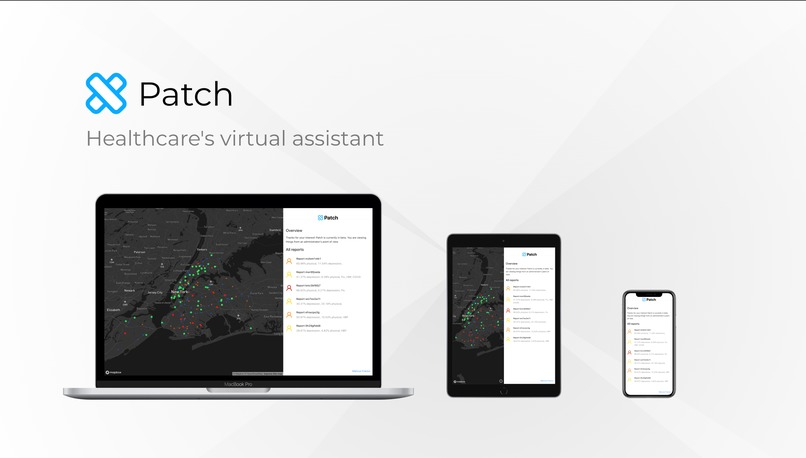
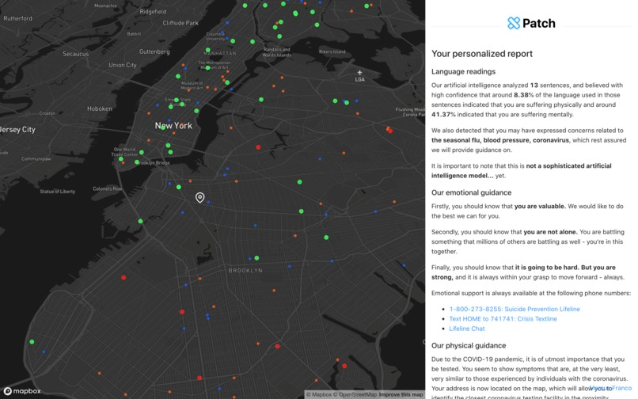
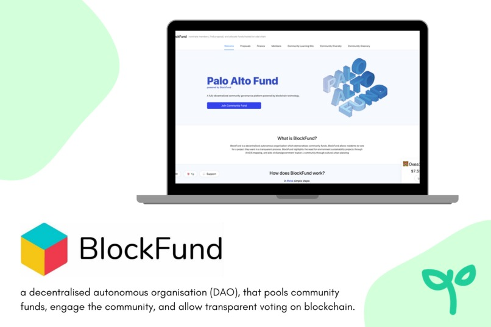
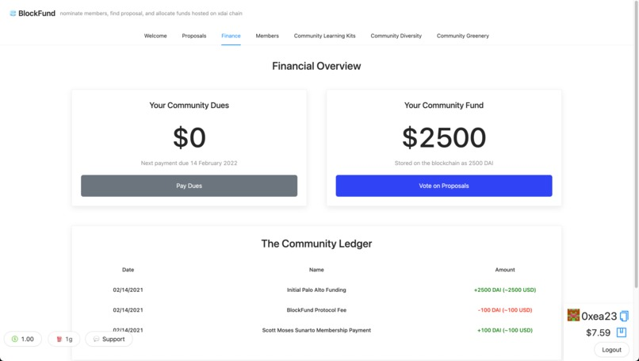
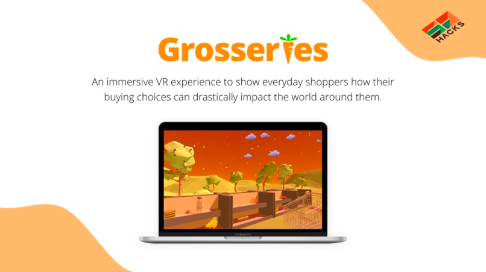
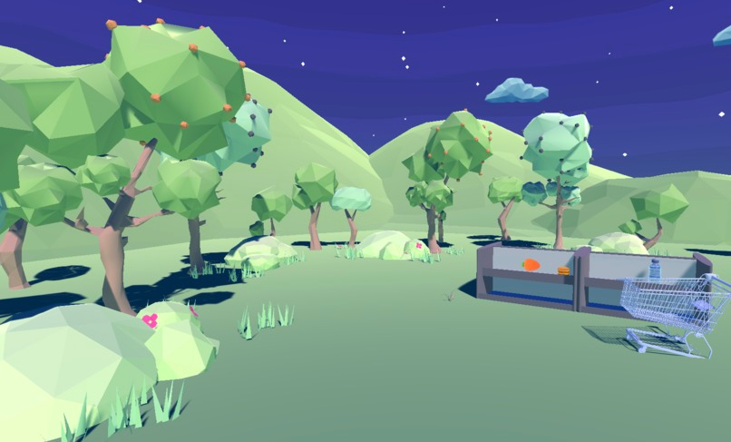
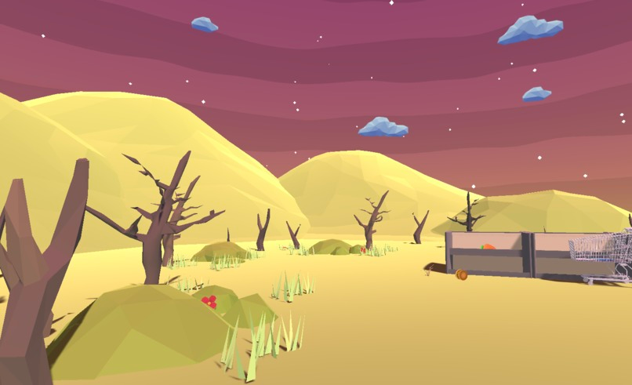
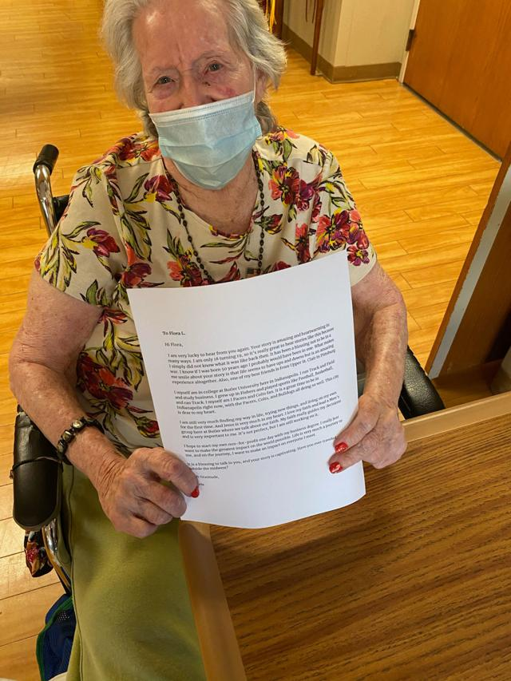
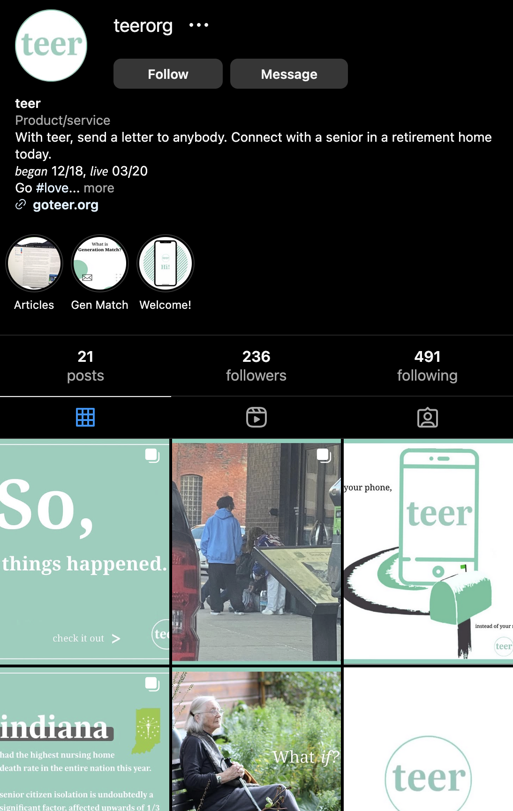
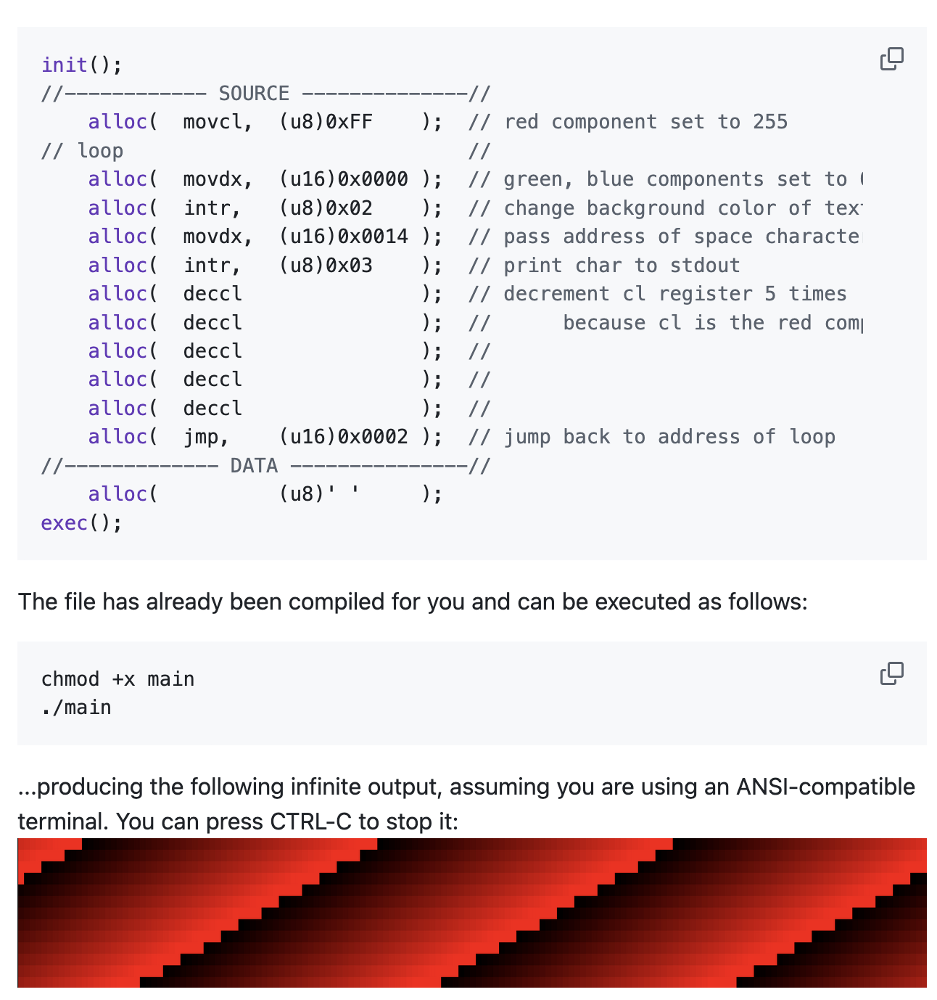

this is the era of my life where i actively pursued coding/tech as a career.
in 2021, i started working full-time as a software engineer, and did not create anything significant outside of work. this continued until late 2024.


Patch was a system where you could text/call a number, and AI would analyze your reported symptoms and create a personalized report that provided some guidance and connected them with nearby healthcare facilities.
this was my first hackathon, and my first solo one. i learned that how you sell the project is really what makes or breaks your chances of winning.


BlockFund was a DAO (decentralized autonomous organization) allowing users to transparently vote on funding for community projects.
i was responsible for most of the frontend. we won 2 awards.



Grosseries was a VR game aiming to educate people on how their purchases impact the environment by literally morphing the in-game environment to reflect the impact of their decisions as they shopped.
i was responsible for designing/modeling the world and making the environment morph when the user added things to their cart.
i remember the idea being a risky last minute decision. none of us had any experience with VR, so we all had to learn a lot very quickly.
we won 4 awards.


teer was a nonprofit my friends and i started back in 2020. the goal was to reduce senior isolation (which had increased due to covid) using a unique program where seniors would be matched with young volunteer penpals, and each could communicate via their preferred means (i.e. texting for the young volunteers, and writing for the seniors).
at its peak i think we were working with 2-3 nursing homes and 30-50 seniors, but i can't remember exactly.
it was featured in some local news outlets (1, 2), and i was accepted to present our work at the MEHA 2021 conference.
we all contributed to every part of the project, but i was most invested in trying to grow the brand by creating content and helping with the technical aspects.
we stopped because we all became busy, and i think we all struggled to figure out the best direction for it.
i am really proud of the impact we had, but i would do things extremely differently if i could go back.

Small was a basic emulator based on Intel 8086 written in C++. it had 5 opcodes and 4 BIOS interrupts before i gave up on it.
i have always been obsessed with low level systems, so this was really fun to work on.
i ran a URL shortener on the "cool.lol" domain for a few years.